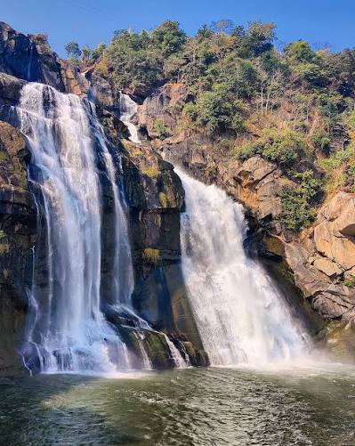
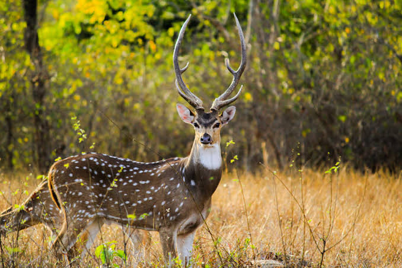
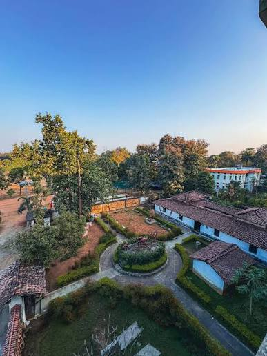

Discover waterfalls, wildlife sanctuaries, tribal heritage, temples and unforgettable travel experiences across Jharkhand.
Explore DestinationsLoading weather…
Waterfalls run fullest just after monsoon, hill viewpoints are clearest in winter. Check today's conditions before you head out, then browse destinations below.



Best season for tourism and sightseeing, with cool, clear days.
Suitable for hill stations and cooler nature trips like Patratu Valley.
Perfect to enjoy the waterfalls in full flow and lush greenery.